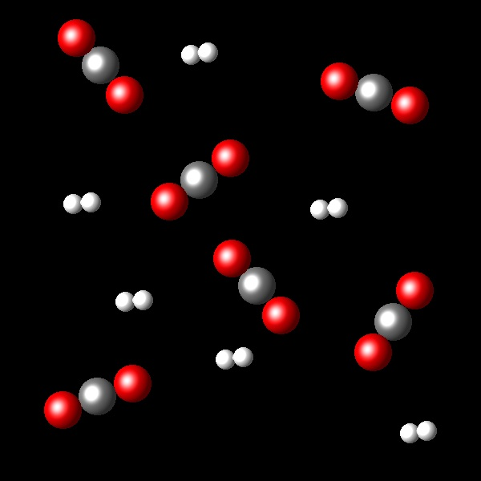
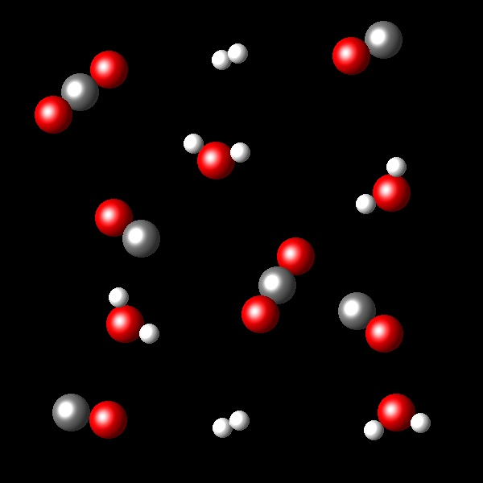

Equilibrio 10
En las siguientes figuras se representan porciones de los estados inicial y final correspondiente a la reacción:
H2(g) + CO2 ⇄ H2O(g) + CO(g) a una temperatura de 2.000 K.
|  |  |
 |
A la vista de la transformación representada calcula la constante de equilibrio Kc que corresponde a este proceso.
Incorrecto. Este valor supondría que en el estado final
las concentraciones de los reactivos y los productos fuesen iguales. Tal cosa no ocurre.
|
|
Correcto. En el estado final la concentración de los
productos es doble que la de los reactivos lo que da una Kc=4.
|
|
Incorrecto. Este valor es muy pequeño y supondría una
conversión muy baja.
|
|
Incorrecto. La conversión es mayor que la que se deduce de
una Kc=2.
|